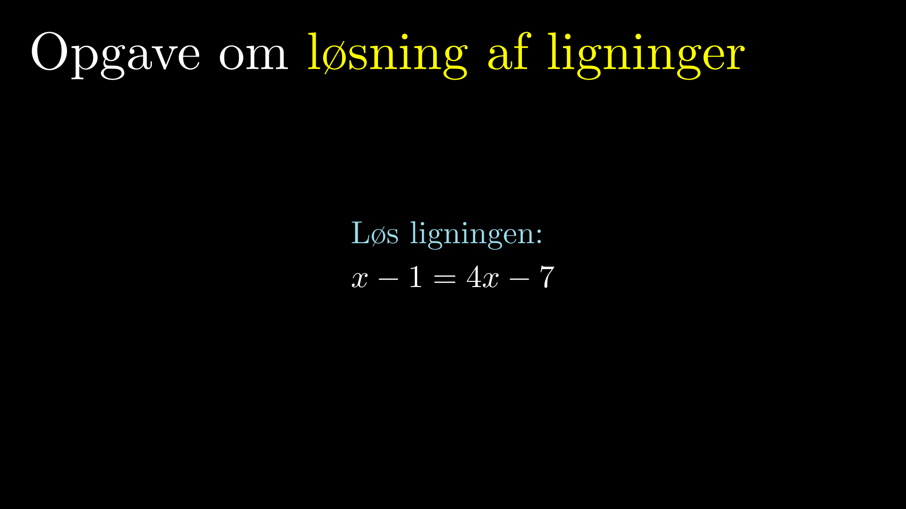

Denne side er et hobbyprojekt og udvikles løbende, når jeg har tid.
Animationer til undervisning
Animationer til undervisning
Matematik
Lineære Funktioner
Eksponentielle Funktioner
Fordoblings- og Halveringskonstant
Potensfunktioner
Andre funktioner
Regressioner
Mindste kvadraters metode
Sammenligning af regressioner
Sandsynlighedsregning
Hvad er en ærlig terning?
Multiplikations- og additionsprincippet
Polynomier
Polynomier
Grundlæggende monotoniforhold
Parallelforskydning af en graf
Deskriptiv Statistik
Stikprøve
Sammenhæng mellem histogram og sumkurve
To-punkt-formler
Lineære funktioner
Eksponentielle funktioner
Trigonometri
Intro til sin og cos
Differentialregning
Eksperimentel intro til afledede funktioner
Differentiabilitet
Tretrinsreglen for differentiering
Beviser
Logaritmens regneregler
Fysik
Supermatematik
